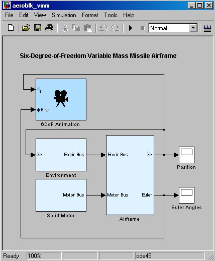

Six-degrees-of- freedom Variable Mass Missile Airframe
This demonstration shows how to simulate Six-degrees-of-freedom variable mass equations of motion with Simulink and Aerospace Blockset.
This demonstration has been color coded to aid in locating Aerospace Blockset blocks. The medium blue blocks are Aerospace Blockset blocks, the light blue blocks are subsystems containing additional Aerospace Blockset blocks and the white blocks are Simulink blocks.
When simulated, this demonstration shows the expected tumbling of an uncontrolled missile. If the aerodynamic force and moment contributions are zeroed, a standard projectile path, discussed in first year Physics classes, can be seen.
This demonstration assumes a neutral end burning solid motor for propulsion and includes rudimentary aerodynamics for the missile body. Fin aerodynamics and other fin contribution are neglected.
